Neuro PlayGround (NPG) Lite#
BioAmp nirkabel 3-saluran yang dapat diperluas untuk HCI & BCI
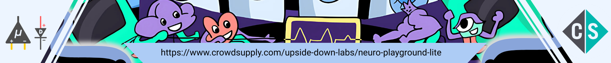
Ringkasan#
Neuro PlayGround Lite (NPG Lite) adalah papan akuisisi sinyal bio-fisiologis nirkabel multikanal dengan form-factor Adafruit feather. It dapat digunakan untuk Elektrokardiografi (ECG), Elektromiografi (EMG), Elektrookulografi (EOG), atau Elektroensefalografi (EEG). Footprint kompak dan setup tanpa masalah memastikan portabilitas, penerapan cepat dan pengalaman tanpa kekacauan, menjadikannya ideal untuk penelitian, pendidikan dan aplikasi wearable.
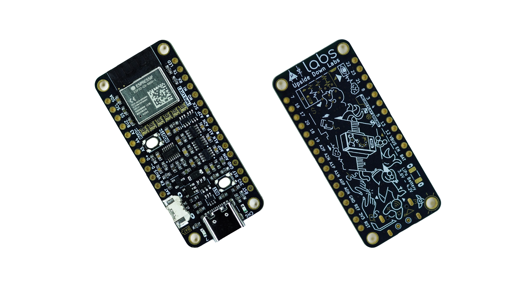
Neuro PlayGround (NPG) Lite#
Dengan penambahan Papan Playmate NPG dan papan FeatherWing pihak ketiga, pengguna dapat dengan mudah meningkatkan kemampuan perangkat, memungkinkan mereka membuat aplikasi Human-Computer Interface (HCI) dan Brain-Computer Interface (BCI) yang luar biasa. Kompatibilitas luasnya memungkinkan Anda melengkapi perangkat dengan fitur seperti motor getar untuk umpan balik haptic, buzzer untuk umpan balik audio, dan konektivitas I2C, menjadikannya sangat serbaguna untuk berbagai aplikasi.
It memanfaatkan suite perangkat lunak Chords open source lintas platform yang kuat kami (Chords-Web, Chords-Python, Chords LSL Connector dan Chords LSL Visualizer), memungkinkan pengguna memvisualisasikan sinyal bio-potensial yang ditangkap secara real-time, menerapkan penyaringan, melakukan analisis FFT, dan banyak lagi. Untuk menyederhanakan proses mem-flash papan NPG Lite kami, kami juga telah membuat alat flasher khusus disebut NPG Lite Flasher, yang memungkinkan Anda mengunduh biner firmware pra-build dari GitHub dan Anda dapat mem-flash biner Anda sendiri juga.
Karena ekspansibilitasnya, berbagai aplikasi, dan kemampuan jaringan yang kuat (menggunakan Bluetooth, Zigbee, Wi-Fi, atau Thread untuk jaringan mesh), NPG Lite memungkinkan Anda menangkap sinyal bio-potensial bagaimana Anda inginkan dan di mana Anda inginkan.
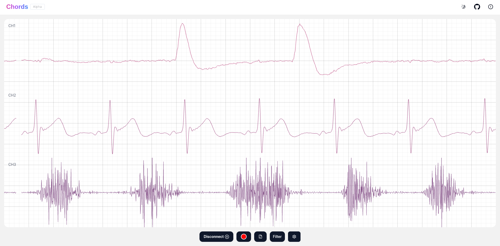
Data 3 Saluran menggunakan Chords Web#
Fitur & Spesifikasi#
Tata Letak Papan & Diagram Pinout#
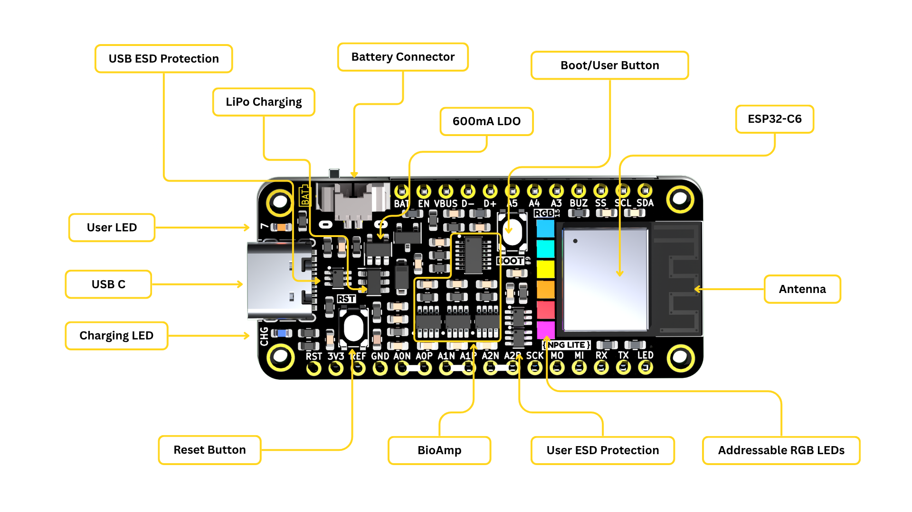
Anotasi Neuro PlayGround (NPG) Lite#
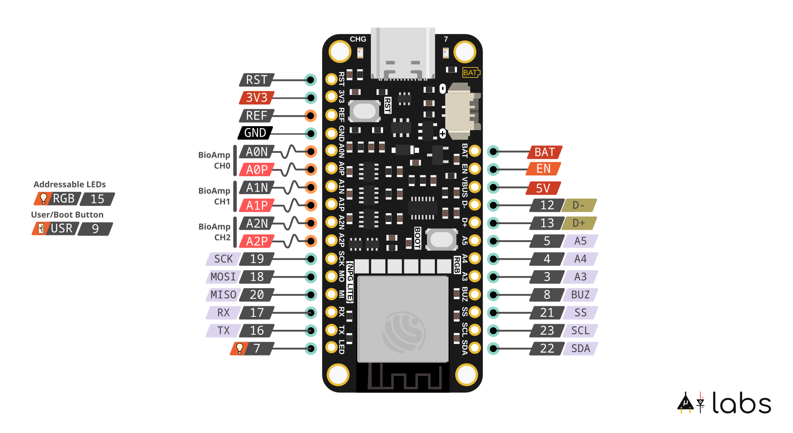
Pinout Neuro PlayGround (NPG) Lite#
Komponen#
{kind=link}
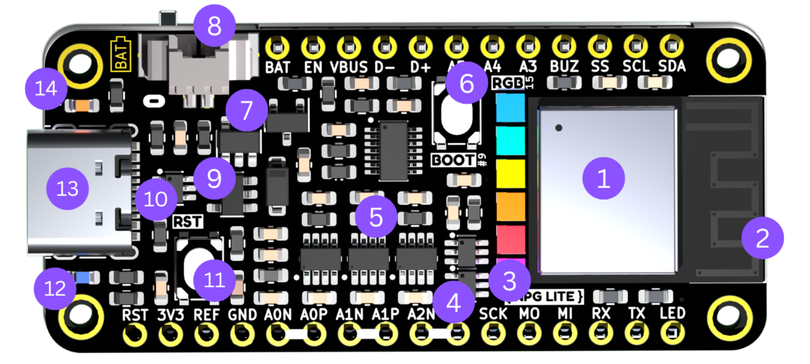
Komponen Neuro PlayGround (NPG) Lite#
Explorer, Ninja, dan Beast!#
Jika Anda nyaman dengan penyolderan dan hanya membutuhkan BioAmp nirkabel 3-saluran, Paket Explorer adalah pilihan yang bagus. Untuk pengalaman NPG Lite yang paling lengkap langsung dari kotak, pilih Paket Ninja. Jika Anda memerlukan saluran tambahan untuk akuisisi sinyal seluruh tubuh atau eksperimen lanjutan, Paket Beast menawarkan konfigurasi yang paling komprehensif.
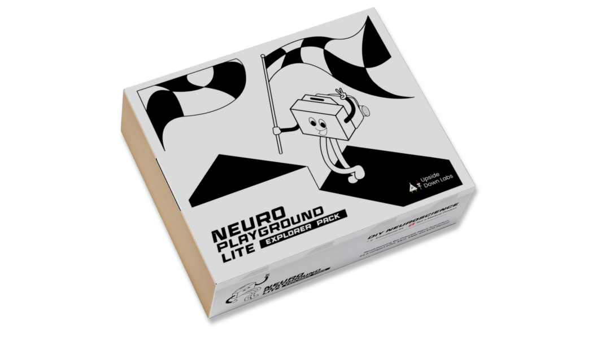
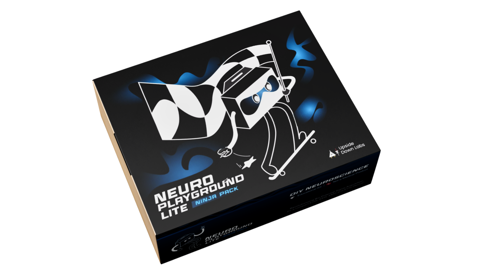
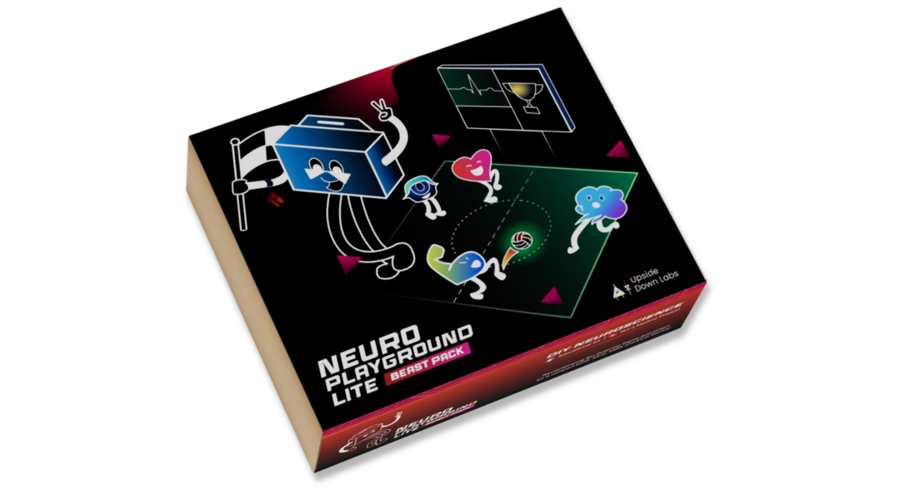
Playmate#
Playmate adalah papan ekspansi modular yang dirancang untuk meningkatkan fungsionalitas Neuro PlayGround (NPG) Lite. Add-on ini terintegrasi dengan mulus dengan sistem inti, memungkinkan pengguna memperluas kemampuan mereka untuk membuat aplikasi Human-Computer Interface (HCI) & Brain-Computer Interface (BCI).
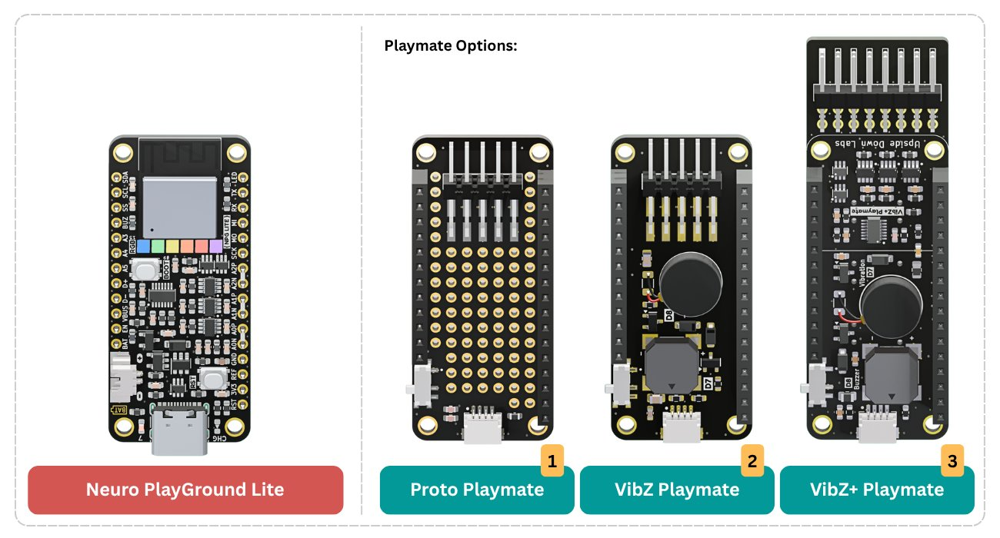
Playmate Neuro PlayGround (NPG) Lite#
1. NPG Proto Playmate#
Proto Playmate menawarkan ruang prototyping fleksibel dengan area khusus untuk menambahkan komponen atau sirkuit Anda sendiri. Ini termasuk port QWIIC untuk integrasi sensor cepat, pin header elektroda 2.54 mm, saklar geser ON/OFF, dan antarmuka konektor untuk elektroda. Dengan menggabungkan elektroda dengan elektronik khusus, pengguna dapat dengan cepat membuat prototipe eksperimen yang didorong sinyal bio-potensial, membangun sirkuit add-on, atau menguji desain baru tanpa perlu breadboard terpisah.
2. NPG VibZ Playmate#
VibZ Playmate memperkenalkan motor getar untuk umpan balik haptic, buzzer untuk umpan balik audio, port QWIIC untuk integrasi sensor I2C yang mudah, saklar geser ON/OFF, pin header elektroda 2.54 mm dan opsi elektroda negatif umum. Dengan Playmate ini, pengguna dapat menyesuaikan setup mereka untuk aplikasi spesifik, baik dalam penelitian, pendidikan, atau eksperimen biofeedback interaktif. Pendekatan modular ini memastikan fleksibilitas, skalabilitas, dan pengalaman pengguna yang lebih baik.
3. NPG VibZ+ Playmate#
VibZ+ Playmate membangun di atas VibZ dengan menyertakan BioAmp 3-saluran tambahan, memungkinkan perekaman dan visualisasi hingga 6 saluran sinyal Bio-potensial secara simultan. Ini mempertahankan motor getar untuk umpan balik haptic, buzzer untuk isyarat audio, saklar geser ON/OFF, port QWIIC, dan antarmuka konektor elektroda. Ini membuat VibZ+ ideal untuk eksperimen yang memerlukan input resolusi lebih tinggi atau cakupan spasial yang lebih besar, seperti EEG multi-saluran, EMG, atau aplikasi biofeedback kompleks.
Panduan Penggunaan#
Untuk membantu Anda memulai dengan cepat, kami telah menyiapkan tutorial video langkah demi langkah. Panduan ini memandu Anda melalui setup, koneksi, dan menjalankan eksperimen dengan Neuro PlayGround Lite.
Pemecahan Masalah
Mengalami masalah menghubungkan Perangkat NPG Anda dengan Chords Web?
Jika Anda mencoba menghubungkan perangkat dan jendela popup untuk Koneksi Bluetooth tidak muncul, pastikan browser berbasis chromium Anda memiliki fitur berikut Diaktifkan:
Buka tab baru dan buka
chrome://flagsCari dan aktifkan flag berikut:
Web Bluetooth
Gunakan backend izin baru untuk Web Bluetooth
Dukungan konfirmasi pairing Web Bluetooth
Fitur Platform Web Eksperimental
Perangkat Lunak Kompatibel#
NPG Lite Flasher#
NPG Lite Flasher adalah utilitas flashing lintas platform untuk papan Neuro PlayGround Lite, menyediakan pembaruan firmware yang mulus melalui serial atau DFU melalui CLI sederhana.
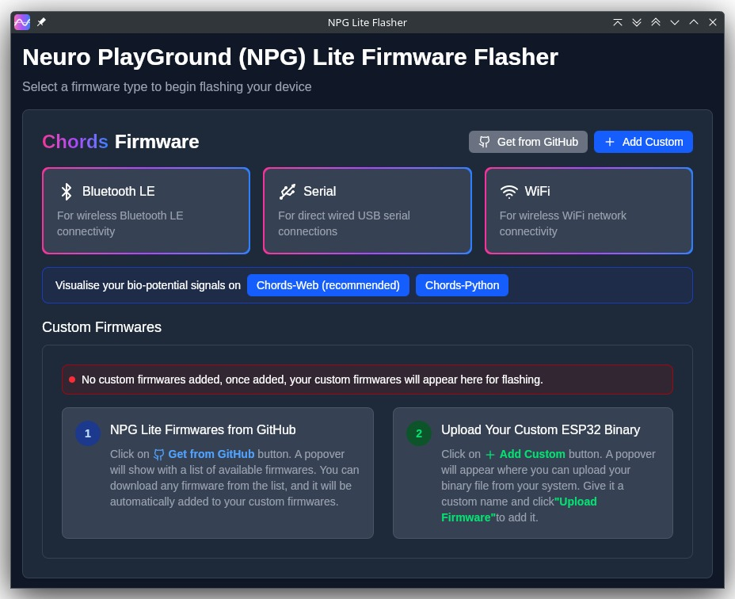
Halaman Peluncuran NPG Lite Flasher#
Untuk mengetahui lebih lanjut tentang NPG Lite Flasher tonton video YouTube.
Chords Web#
Kunjungi Chords Web untuk visualisasi sinyal biopotensial real-time (EEG, EMG, ECG, EOG), dengan plotting lanjutan, snapshotting dan perekaman CSV.

Halaman Peluncuran Chords Web#
Untuk mengetahui lebih lanjut tentang Chords Web klik di sini atau tonton video YouTube.
Chords Python#
Chords Python adalah tas alat open-source untuk merekam sinyal biopotensial seperti ECG, EMG, EEG, atau EOG, bersama dengan visualisasi menggunakan perangkat keras BioAmp.
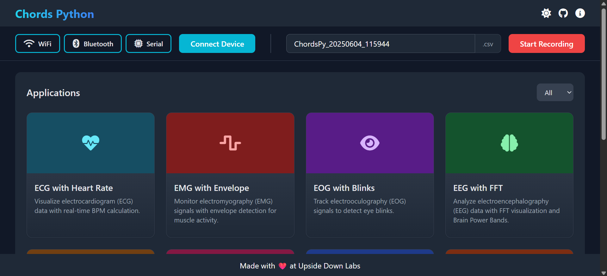
Halaman Peluncuran Chords Python#
Untuk mengetahui lebih lanjut tentang Chords Python tonton video YouTube.
Chords LSL Connector#
Chords LSL Connector adalah jembatan berbasis Rust yang mengalirkan data dari perangkat yang menjalankan firmware Chords ke Lab Streaming Layer (LSL), memungkinkan akuisisi dan analisis yang disinkronkan dengan perangkat lunak BCI/EEG.
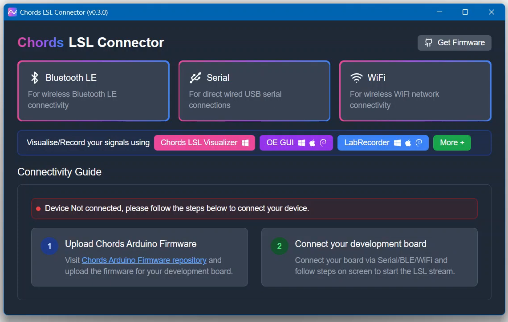
Halaman Peluncuran Chords LSL Connector#
Untuk mengetahui lebih lanjut tentang Chords LSL Connector tonton video YouTube.
Chords LSL Visualizer#
Chords LSL Visualizer adalah program berbasis Rust untuk memvisualisasikan sinyal biopotensial dari aliran LSL apa pun.
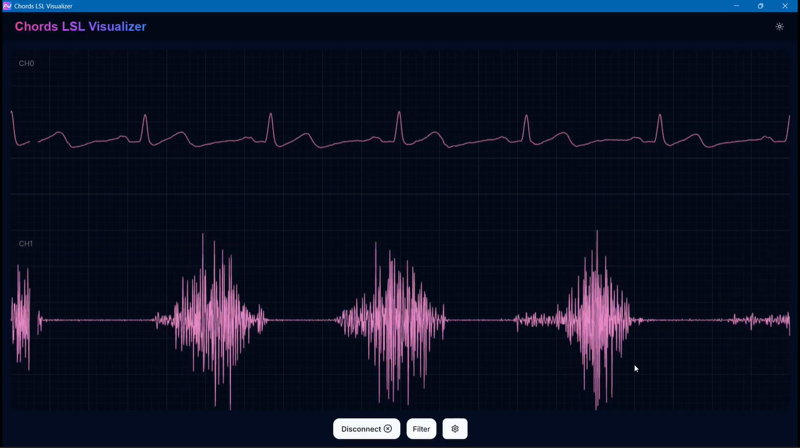
Halaman Peluncuran Chords LSL Visualizer#
Tutorial Proyek#
NPG Lite, dengan BioAmp multi-saluran, konektivitas nirkabel, operasi baterai, dan antarmuka ekspansi, memungkinkan pengguna membuat aplikasi HCI dan BCI dengan mudah. Kami telah membuat proyek yang memanfaatkan sinyal ECG, EMG, EOG, dan EEG untuk menginspirasi Anda, tetapi kemungkinannya mencakup lebih banyak kasus penggunaan.
Setiap proyek ini berjalan pada firmware BLE, yang dapat Anda flash menggunakan alat flasher berikut:
Kami merekomendasikan menggunakan NPG Lite Flasher untuk flashing Firmware BLE.
Atau, Anda dapat menggunakan Arduino IDE untuk mengunggah firmware secara manual.
Ini adalah antarmuka manusia-komputer (HCI) yang menggunakan data EMG 3-saluran untuk mendeteksi sinyal otot dari tangan kiri, tangan kanan, dan dada untuk mengontrol instrumen musik virtual. Saat otot berkontraksi, setiap saluran memicu efek suara yang berbeda, mengubah tubuh Anda menjadi orkestra organik.
Note
Untuk mempelajari proyek ini, kunjungi halaman Instructables kami untuk panduan detail: Muscle Melody: Buat Musik Dengan Gerakan Otot Anda (EMG)
Kunjungi Antarmuka Web untuk memvisualisasikan secara real-time.
Proyek ini berfokus pada penangkapan sinyal elektrokardiogram (ECG) untuk menghitung detak jantung menggunakan Neuro PlayGround Lite dan menampilkannya di browser berbasis Chrome di ponsel secara real-time melalui koneksi Bluetooth LE.
Note
Untuk mempelajari proyek ini, kunjungi halaman Instructables kami untuk panduan detail: Pantau ECG dan Detak Jantung di Ponsel Anda
Kunjungi Antarmuka Web untuk memvisualisasikan secara real-time.
Alih-alih menggunakan keyboard, Anda dapat mengontrol permainan hanya dengan berkedip. Setup mendeteksi sinyal EOG dari mata, mengirim data melalui Bluetooth LE ke PC, mendeteksi kedipan mata, dan kemudian mengambil kedipan mata sebagai pemicu untuk meniru penekanan spasi. Anda dapat mengonfigurasi kode untuk menyimulasikan penekanan tombol lainnya juga.
Note
Untuk mempelajari proyek ini, kunjungi halaman Instructables kami untuk panduan detail: Mengontrol Keyboard Dengan Kedipan Mata Menggunakan Neuro PlayGround Lite
Proyek ini menampilkan aplikasi antarmuka otak-komputer (BCI) yang menggunakan sinyal elektroensefalografi (EEG) untuk mengoperasikan permainan pop gelembung interaktif di browser web. Sistem mengidentifikasi aktivitas gelombang beta (12–30 Hz), yang menunjukkan tingkat konsentrasi dan perhatian. Gelembung muncul dan pop saat pengguna mempertahankan fokus, tetapi berhenti pop saat konsentrasi berkurang.
Note
Untuk mempelajari proyek ini, kunjungi halaman Instructables kami untuk panduan detail: Pop Gelembung Dengan Pikiran Anda (EEG) | Neuro PlayGround (NPG) Lite
Kunjungi Antarmuka Web untuk memvisualisasikan secara real-time.
CortEX adalah platform neurofeedback meditasi open-source yang menggabungkan sinyal EEG dan ECG untuk memberikan umpan balik real-time tentang keadaan mental dan emosional Anda. Dirancang untuk meningkatkan mindfulness, ini memvisualisasikan aktivitas gelombang otak, detak jantung, dan keseimbangan belahan untuk membantu Anda bermeditasi lebih efektif - semua dari browser Anda, menggunakan perangkat NPG Lite.
Note
Untuk mempelajari proyek ini, kunjungi halaman Instructables kami untuk panduan detail: Perjalanan Neurofeedback Meditasi
Kunjungi Antarmuka Web untuk memvisualisasikan secara real-time.
Mobil Terkontrol Otak mengubah gelombang otak (EEG) dan aktivitas otot (EMG) menjadi kontrol robotik real-time, memungkinkan Anda mengemudikan mobil tanpa remote tradisional - cukup fokuskan pikiran Anda untuk maju, tekuk lengan kiri atau kanan Anda untuk belok, atau kedua lengan untuk mundur. Didukung oleh Neuro PlayGround Lite, perangkat biopotensial nirkabel, sistem menangkap sinyal Anda melalui elektroda dan mengirimkannya melalui BLE ke penerima berbasis ESP32 yang menggerakkan motor. Proyek ini menawarkan pandangan langsung ke masa depan interaksi manusia-mesin, di mana pikiran dan gerakan secara mulus memerintah mesin.
Note
Untuk mempelajari proyek ini, kunjungi halaman Instructables kami untuk panduan detail: Mobil Terkontrol Otak : Kontrol Robotik EEG + EMG
Kontrol GTA V menggunakan pikiran Anda! Sistem Gaming Terkontrol Otak menggunakan Neuro PlayGround Lite nirkabel untuk menerjemahkan gelombang otak (EEG) dan kontraksi otot (EMG) Anda menjadi kontrol permainan. Fokus untuk mempercepat, dan tekuk lengan kiri atau kanan Anda untuk mengemudi. Proyek BCI ini memberikan pandangan menakjubkan ke masa depan gaming, memungkinkan Anda memerintah mobil Anda dengan sinyal tubuh Anda saja.
Cuboid adalah permainan bertenaga neurofeedback yang mengubah fokus Anda menjadi aksi. Menggunakan data gelombang otak real-time dari perangkat NPG Lite, permainan menantang Anda untuk memindahkan kuboid geometris ke atas dengan mempertahankan fokus mental. Dengan beberapa tingkat kesulitan, streaming EEG langsung, dan umpan balik visual, Cuboid mengubah konsentrasi menjadi pengalaman terkontrol otak yang imersif.
Note
Kunjungi Antarmuka Web untuk memvisualisasikan secara real-time.
Permainan Kekuatan Otot mengubah upaya fisik Anda menjadi data yang bermakna. Cukup hubungkan ke kelompok otot mana pun yang ingin Anda fokuskan, dan Anda akan langsung memvisualisasikan aktivitas listrik mentah yang dihasilkan otot Anda. Tapi itu lebih dari data mentah; permainan juga memproses informasi ini untuk menampilkan kekuatan otot real-time Anda. Ini memungkinkan Anda melacak kemajuan, mengidentifikasi area untuk perbaikan, dan terlibat dengan latihan Anda dengan cara yang benar-benar berbasis data. Baik Anda atlet, memulihkan dari cedera, atau hanya penasaran tentang tubuh Anda, proyek ini menawarkan jendela unik ke kemampuan otot Anda.
Note
Kunjungi Antarmuka Web untuk memvisualisasikan secara real-time.
Aplikasi Pikiran-ke-Kata (M2W) adalah alat Komunikasi Asistif inovatif yang memungkinkan pengguna mengontrol antarmuka menu hanya melalui kedipan mata. Ini menggunakan artefak EOG yang ada di sinyal EEG saluran tunggal, yang ditangkap oleh perangkat NPG Lite. Fungsi inti bergantung pada algoritma novel yang memisahkan dan mengenali sinyal kontrol yang berbeda: kedipan ganda digunakan untuk mengaktifkan atau beralih antara opsi, sementara kedipan tiga digunakan untuk mengonfirmasi dan membuat pilihan.
Note
Aplikasi Web M2W: Antarmuka Web
Neuro-PlayGround Lite C3 (Usang)
Ringkasan
Neuro Playground (NPG) Lite adalah perangkat amplifikasi sinyal bio-potensial nirkabel multichannel dirancang untuk merekam EMG, ECG, EOG, dan EEG. It datang dalam form factor Adafruit feather kompak dan menawarkan konektivitas WiFi/BLE. Dengan penambahan papan anak disebut Playmate, pengguna dapat dengan mudah meningkatkan kemampuan perangkat, memungkinkan siswa/peneliti/hobi untuk membuat aplikasi HCI dan BCI yang luar biasa.
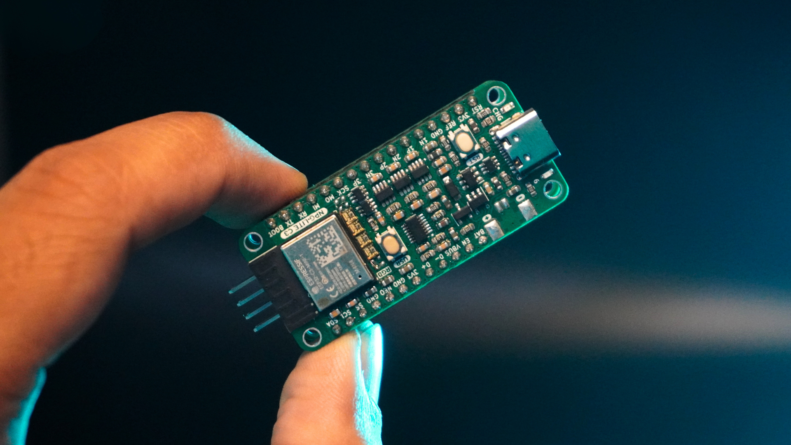
Neuro PlayGround (NPG) Lite C3#
Fitur & Spesifikasi
Tata Letak Papan
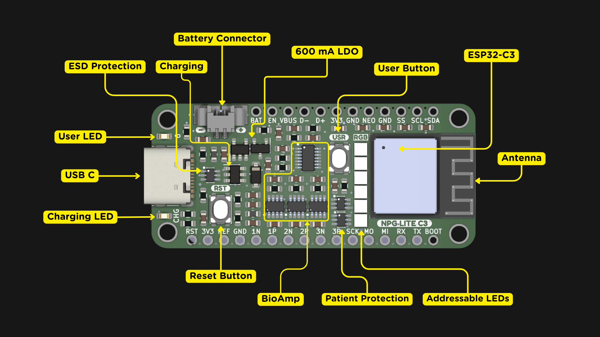
Anotasi Neuro PlayGround (NPG) Lite C3#
Playmate
Playmate adalah papan ekspansi modular yang dirancang untuk meningkatkan fungsionalitas Neuro Play Ground (NPG) Lite. Add-on ini terintegrasi dengan mulus dengan sistem inti, memungkinkan pengguna memperluas kemampuan mereka untuk membuat aplikasi HCI & BCI yang luar biasa.
VibZ
Playmate pertama, VibZ, memperkenalkan umpan balik haptic, buzzer, port QWIIC untuk integrasi sensor yang mudah, saklar ON/OFF, dan pin header elektroda. Dengan Playmate ini, pengguna dapat menyesuaikan setup mereka untuk aplikasi spesifik, baik dalam penelitian, pendidikan, atau eksperimen biofeedback interaktif. Pendekatan modular ini memastikan fleksibilitas, skalabilitas, dan pengalaman pengguna yang lebih baik.
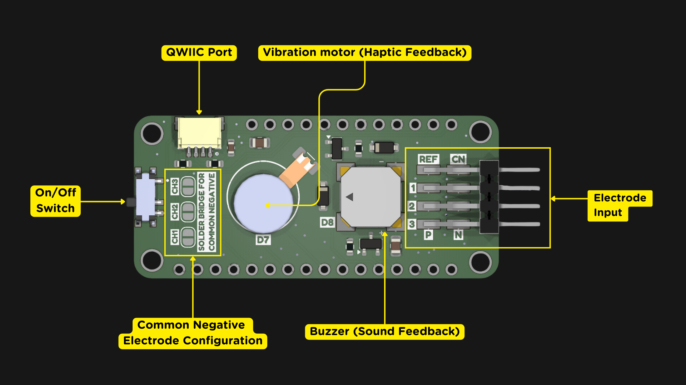
Playmate VibZ#
Fitur & Spesifikasi
Pin header Dupont 2.54mm untuk koneksi elektroda |
Motor getar untuk umpan balik haptic |
Buzzer untuk umpan balik audio |
Port QWIIC / STEMMA QT I2C |
Saklar ON/OFF |